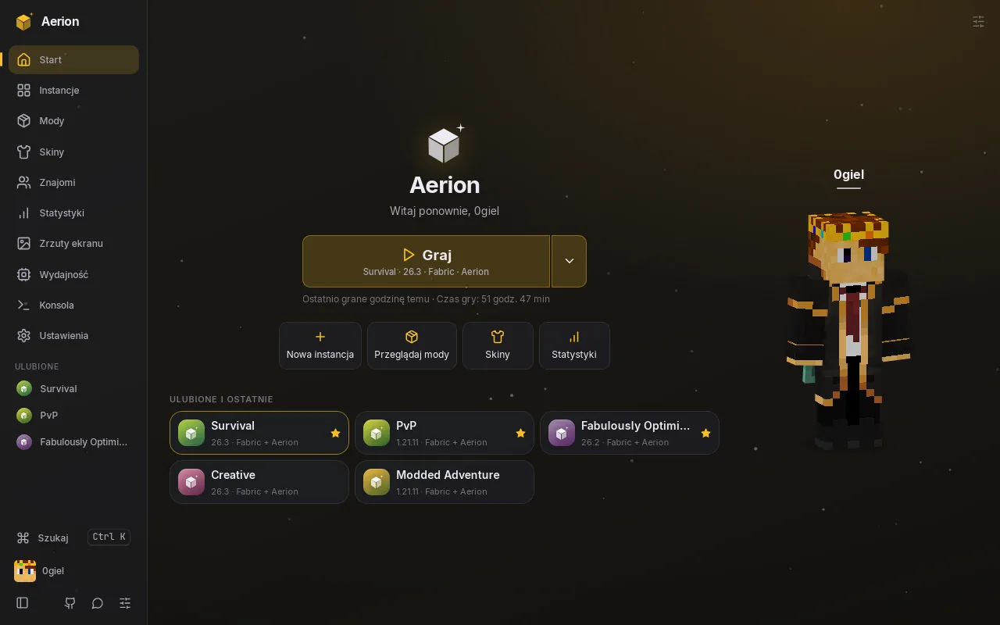
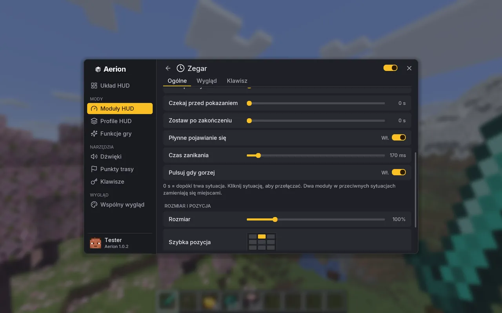
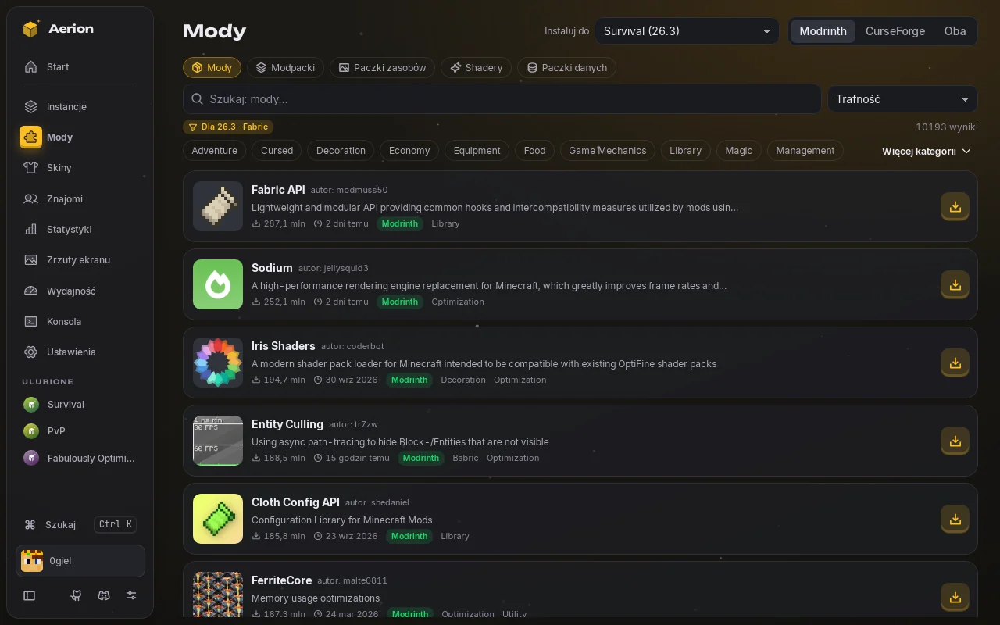

Profile HUD
Osobne układy na PvP, budowanie i survival. Zmieniasz je klawiszem albo same po wejściu na serwer.
Launcher do Minecraft: Java Edition i mod w jednym. HUD układany myszką, motywy także w menu gry, mody z Modrinth i CurseForge. Otwarty kod, bez śledzenia.
Darmowy · Windows i Linux · Wersja · Wymaga Minecraft: Java Edition

Przeciągnij moduły i przełącz styl. W grze masz 27 modułów i elementów, każdy z własnym wyglądem.
Moduł współrzędnych ustawiony na „ukryj w walce” znika, a jego miejsce zajmuje zdrowie.
Każdy moduł może mieć własne reguły, więc na ekranie jest tylko to, czego akurat potrzebujesz.

Wybierz motyw albo zbuduj własny w edytorze z podglądem. Kolory przechodzą też do menu gry, a położenie paska, jego styl i animacje ustawisz w motywie.

Mody i paczki z Modrinth i CurseForge dodasz jednym przyciskiem, razem z wymaganymi zależnościami.
Osobne układy na PvP, budowanie i survival. Zmieniasz je klawiszem albo same po wejściu na serwer.
Mapa w grze, punkty dodawane kliknięciem, punkt śmierci i udostępnianie współrzędnych.
Klawiatura w grze i w launcherze, która od razu pokazuje konflikty.
Otwórz świat dla znajomych przez internet jednym przyciskiem, bez przekierowywania portów.
Lista znajomych ze skinami i przycisk dołączania do ich świata.
Launcher rozpoznaje przyczynę awarii gry i proponuje poprawkę.
Czas gry, podsumowanie FPS i pamięci po każdej sesji.
Import instancji z innych launcherów i przeniesienie ustawień na nowy komputer w jednym pliku.
Cały kod launchera i moda jest publiczny na licencji GPL-3.0. Tokeny logowania trzyma systemowy magazyn haseł, a każda aktualizacja jest podpisana i sprawdzana przed instalacją.
Aerion działa na komputerach z Windows i Linuksem. Na tym urządzeniu go nie uruchomisz, ale możesz wrócić tu z komputera.
Aktualizacji nie musisz pobierać ręcznie: launcher i mod aktualizują się same.
Launcher i mod są darmowe. Potrzebujesz tylko kupionego Minecraft: Java Edition.
Logujesz się oficjalnym kontem Microsoft, a tokeny trzyma systemowy magazyn haseł. Kod jest otwarty, a aktualizacje podpisane. Aerion to produkt nieoficjalny, niezwiązany z Mojang ani Microsoft.
Nie. Nie ma analityki ani śledzenia. Launcher łączy się tylko z tym, co jest potrzebne do działania: logowaniem Microsoft, serwerami Mojang, źródłami modów i loaderów oraz GitHubem. Szczegóły są w polityce prywatności.
Na Windows 10 i 11 oraz na Linuksie, w obu przypadkach 64-bit. Wersji na macOS i telefony nie ma.
Nie. Launcher sam pobiera wersję Javy potrzebną do danej wersji gry.
Mod Aeriona działa z Fabric na wersjach 26.3 i 1.21.11. Sam launcher uruchamia też inne wersje gry, tylko bez moda.
Instalator nie ma płatnego certyfikatu wydawcy, więc SmartScreen go nie rozpoznaje. Kod jest otwarty, a w sekcji pobierania znajdziesz sumę SHA-256 każdego pliku.
Na Discordzie, w kanałach zgłoszeń i pomysłów, albo w zakładce Issues na GitHubie.